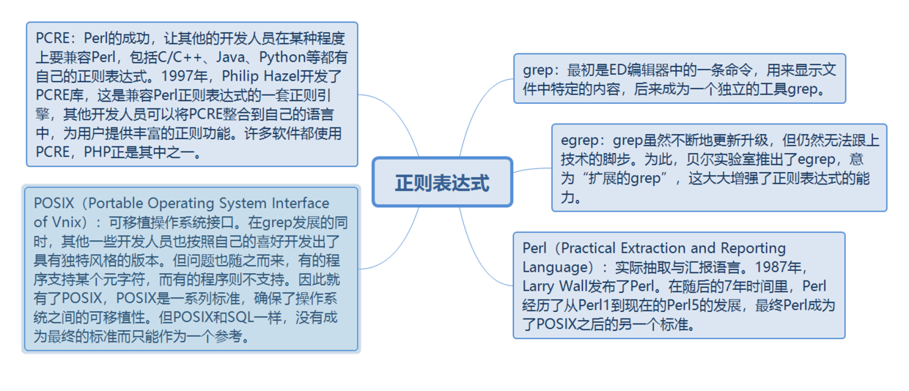
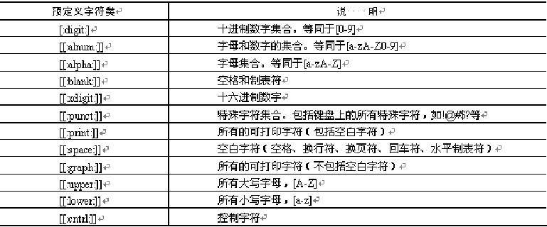
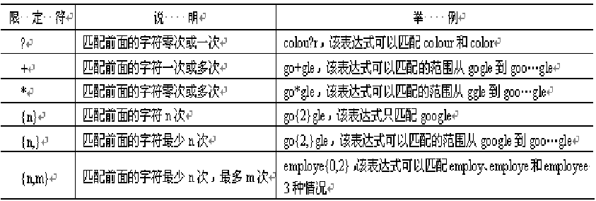
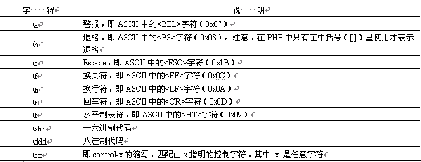
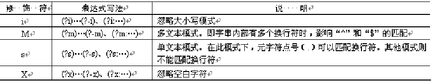
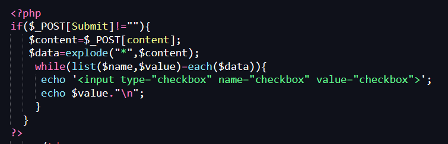
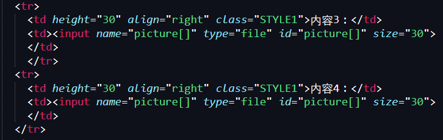
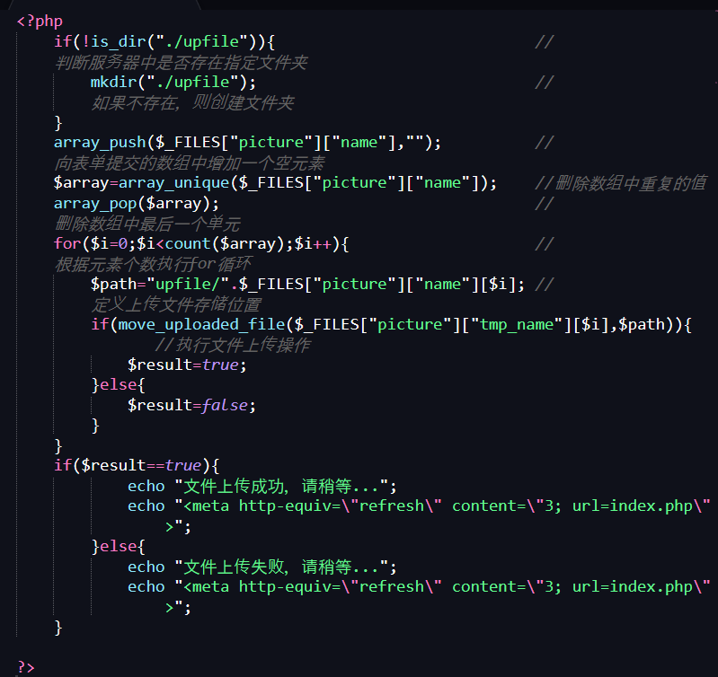
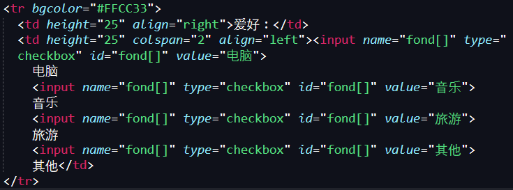

原文连接:https://www.cnblogs.com/dashucoding/p/10724685.html
trim()函数，用于去除字符串首尾空格和特殊字符
返回的是去掉的空格和特殊字符后的字符串
string trim(string str [,string charlist]); str 要操作的字符串对象， 第二个参数为可选参数，选取要从字符串中删除的字符，不设置该参数，表示要将所有的字符删除ltrim()函数，用于去除字符串左边的空格和特殊字符：
string ltrim(string str [,string charlist]);rtrim()函数，用于去除右边的空格和特殊的字符：
string rtrim(string str[,string charlist]);转义字符，手动转义：使用""字符。字符串的定义有单引号，双引号，界定符(<<<)。
自动转义：addslashes()函数和stripslashes()函数
addslashes()函数，用于为字符串加入“”。
string addslashes(string str)stripslashes()函数，用于将addslashes()函数转义后的字符串返回原样。
string stripslashes(string str)对要转义字符串，还原字符串进行一定范围的限制，addcslashes()函数和stripcslashes()函数。
addcslashes()函数：转换成八进制表示
string addcslashes(string str, string charlist)stripcslashes()函数，用于对addcslashes()函数转义过的字符串还原。
string stripcslashes(string str)获取字符串的长度，strlen()函数：汉字占两个字符
int strlen(string str)截取字符串，substr()函数：
string substr(string str, int start [,int length]) str指定的字符串对象 start截取开始的字符串位置 length截取字符的个数比较字符串，按照字节比较：strcmp()函数和strcasecmp()函数，按照自然排序strnatcmp()函数，按照从源字符串的位置开始比较strncmp()函数。
strcmp()函数区分字符的大小写
strcasecmp()函数不区分字符的大小写
int strcmp ( string str1, string str2) 相等则返回0 字符串之间的比较，strcmp()函数比较。
strnatcmp()函数来实现自然排序字符串比较：strnatcmp()用于比较字符串中数字部分
int strnatcmp(string str1, string str2);strncmp()函数由于比较字符串中前n个字符：
int strncmp(string str1, string str2, int len)检索字符串：查找指定的关键字
string strstr(string haystack, string needle) 区分大小写substr_count()函数检索子串出现的次数
int substr_count(string haystack,string needle)str_ireplace() / str_replace()函数和substr_replace()函数
mixed str_ireplace ( mixed search, mixed replace, mixed subject [, int &count])search需要查找的字符串
replace替换的值
subject查找的范围
count替换的数量
substr_replace()函数：对指定字符串中的部分字符串进行替换
string substr_replace(string str,string repl,int start,[int length])str要操作的原始字符串，repl 替换后的新字符串，start指定替换字符串开始的位置，负数表示起始位置从字符串的结尾开始，length指定返回的字符串长度，负数表示起始位置从字符串的结尾开始，0表示插入而非替代 。
格式化字符串，number_format()函数用来将数字字符串格式化
string number_format(float number,[int num_decimal_places],[string dec_seperator],string thousands_ seperator)分割字符串，explode()函数，对一个字符串进行分割，返回值为数组：
array explode(string separator,string str,[int limit])合成字符串，将数组的内容组合成一个新字符串
string implode(string glue, array pieces)正则表达式：PHP中的POSIX函数，PHP中的PCRE函数。

一个正则表达式包含 元字符 和 文本字符。
行定位符（^和$）
“^”表示行的开始
“$”表示行的结尾
单词定界符（\b、\B）
字符类（[ ]）
选择字符（|）
连字符（-）[a-zA-Z]
排除字符（[^]）[^a-zA-Z]
限定符（? * + {n,m}）
点号字符（.）^d.s$
转义字符（\）
括号字符（()）

POSIX扩展正则表达式函数
ereg()函数和eregi()函数
bool ereg/eregi ( string pattern, string string [, array regs] )ereg_replace()函数和eregi_replace()函数
string ereg_replace/eregi_replace ( string pattern, string replacement, string string )split()函数和spliti()函数
array split/spliti ( string pattern, string string [, int limit] )PCRE兼容正则表达式函数
1、preg_grep()函数
array preg_grep ( string pattern, array input )2、preg_match()函数和preg_match_all()函数
int preg_match/preg_match_all ( string pattern, string subject [, array matches] )3、preg_quote()函数 函数返回转义后的字串
string preg_quote ( string str [, string delimiter] )4、preg_replace()函数
mixed preg_replace ( mixed pattern, mixed replacement, mixed subject [, int limit] )5、preg_replace_callback()函数
mixed preg_replace_callback ( mixed pattern, callback callback, mixed subject [, int limit] )6、preg_split()函数
array preg_split ( string pattern, string subject [, int limit ] )<table width="765" height="229" border="0" align="center" cellpadding="0" cellspacing="0">
<tr>
<td height="229" colspan="2"><img src="images/bg_03.jpg" width="765" height="229" border="0" href="index.php" /></td>
</tr>
<tr>
<td width="565" height="364" align="center" valign="top"> <form name="reg_check" method="post" action="index_ok.php" onSubmit="return chkreg(reg_check,'all')">
<table width="550" height="270" border="0" align="center" cellpadding="0" cellspacing="0">
<tr>
<td height="38" colspan="3" valign="bottom"><img src="images/bg_05.jpg" width="543" height="30" /></td>
</tr>
<tr>
<td width="110" height="30"><div align="right">会员名：</div></td>
<td colspan="2" align="left"> <input type="text" name="recuser" size="20" onBlur="chkreg(reg_check,0)">
<font color="#FF0000">*</font>
<div id="check_recuser" style="color:#F1B000"></div></td>
</tr>
<tr>
<td height="30"><div align="right">详细联系地址：</div></td>
<td height="30" colspan="2" align="left"> <input type="text" name="address" size="50" onBlur="chkreg(reg_check,1)">
<font color="#FF0000">*</font>
<div id="check_address" style="color:#F1B000"></div></td>
</tr>
<tr>
<td height="30"><div align="right">邮政编码：</div></td>
<td height="30" colspan="2" align="left"> <input type="text" name="postalcode" size="20" onBlur="chkreg(reg_check,2)"><div id="check_postalcode" style="color:#F1B000"></div></td>
</tr>
<tr>
<td height="30"><div align="right">QQ号码：</div></td>
<td height="30" colspan="2" align="left"> <input type="text" name="qq" size="20" onBlur="chkreg(reg_check,3)">
<font color="#FF0000">*</font>
<div id="check_qq" style="color:#F1B000"></div></td>
</tr>
<tr>
<td height="30"><div align="right">E-mail：</div></td>
<td height="30" colspan="2" align="left"> <input type="text" name="email" size="20" onBlur="chkreg(reg_check,4)">
<font color="#FF0000">*</font> <font color="#999999">请务必正确填写您的邮箱</font>
<div id="check_email" style="color:#F1B000"></div></td>
</tr>
<tr>
<td height="30" align="right">固定电话：</td>
<td height="30" colspan="2" align="left"> <input type="text" name="gtel" size="20" onBlur="chkreg(reg_check,6)">
<font color="#FF0000">*</font> <font color="#999999"><div id="check_gtel" style="color:#F1B000"></div></font></td>
</tr>
<tr>
<td height="30"><div align="right">移动电话：</div></td>
<td height="30" colspan="2" align="left"> <input type="text" name="mtel" size="20" onBlur="chkreg(reg_check,5)">
<font color="#FF0000">*</font>
<div id="check_mtel" style="color:#F1B000"></div></td>
</tr>
<tr>
<td height="30"> </td>
<td width="100" height="30"><input type="image" src="images/bg_09.jpg"></td>
<td width="340"><img src="images/bg_11.jpg" width="56" height="30" onClick="reg_check.reset()" style="cursor:hand"/></td>
</tr>
</table>
</form></td>
<td width="200" height="364"><img src="images/bg_07.jpg" width="200" height="364" /></td>
</tr>
<tr>
<td colspan="2"><img src="images/bg_08.jpg" width="765" height="101" /></td>
</tr>
</table>function checkregtel(regtel){
var str=regtel;
var Expression=/^13(\d{9})$|^18(\d{9})$|^15(\d{9})$/;
var objExp=new RegExp(Expression);
if(objExp.test(str)==true){
return true;
}else{
return false;
}
}
function checkregtels(regtels){
var str=regtels;
var Expression=/^(\d{3}-)(\d{8})$|^(\d{4}-)(\d{7})$|^(\d{4}-)(\d{8})$/;
var objExp=new RegExp(Expression);
if(objExp.test(str)==true){
return true;
}else{
return false;
}
}
function checkregemail(emails){
var str=emails;
var Expression=/\w+([-+.']\w+)*@\w+([-.]\w+)*\.\w+([-.]\w+)*/;
var objExp=new RegExp(Expression);
if(objExp.test(str)==true){
return true;
}else{
return false;
}
}php数组：什么是数组，声明数组，数组的类型，输出数组，数组的构造，遍历数组，字符串和数组的转换，统计数组元素个数，查询数组中指定元素，获取数组中最后一个元素，向数组中添加元素，删除数组中重复的元素。
数据就是一组相同数据的集合，数组是一组有序的变量，每个变量为一个元素，每个元素都有一个特殊的标识符来区分，为下标。数组就是存储多个值的容器。
声明数组：array()声明数组，通过数组元素赋值声明数组。
array array ( [key => value...])数组类型：（数字）索引数组 和 （字符串）关联数组
输出数组：
bool print_r ( mixed expression )数组的构造：一维数组 和 二维数组
遍历数组：foreach结构遍历数组 和 list()函数遍历数组，list()函数只能用于数字索引的数组，且从0开始。
explode()函数和implode()函数
explode()函数将字符串转换成数组
array explode(string separator, string string, [int limit])
<?php
$str = "da, dashu, dashucoding";
$strs = explode("," $str);
print_r($strs);
?>
<form name="form1" method="post" action="">
<table width="400" border="1" cellpadding="0" cellspacing="1" bordercolor="#FF9900" bgcolor="#CCFF66">
<tr align="center">
<td width="98" height="120">添加项</td>
<td width="233" height="120"><p>
<textarea name="content" cols="30" rows="5" id="content"></textarea><br>
<td widt="60" height="120"><input type="Submit" name="Submit" value="提交"></td>
</tr>
</table>
</form><td><table width="400" border="1" cellpadding="0" cellspacing="1" bordercolor="#FF9900" bgcolor="#CCFF66">
<tr align="center">
<td width="98" height="30">投票选项：</td>
<td width="223" height="30">
<?php
if($_POST[Submit]!=""){
$content=$_POST[content];
$data=explode("*",$content);
while(list($name,$value)=each($data)){
echo '<input type="checkbox" name="checkbox" value="checkbox">';
echo $value."\n";
}
}
?>
</td>
<td width="61" height="30"> </td>
</tr>
</table></td>
implode()函数将数组转换成字符串
string implode(string glue, array pieces)统计数组元素个数：
int count ( mixed array [, int mode]) COUNT_RECURSIVE count_recursive查找数组中指定的值，array_search()函数
mixed array_search ( mixed needle, array haystack [, bool strict])获取数组中最后一个元素，array_pop()函数
返回数组的最后一个元素
mixed array_pop ( array array)向数组中添加元素，array_push()函数向数组中添加元素
int array_push ( array array, mixed var [, mixed ...])删除数组中重复元素，array_unique()函数删除数组中重复的元素。
array array_unique ( array array)上传多个文件
move_uploaded_file()函数上传文件函数，array_push()函数向数组中添加元素，array_unique()函数用于删除数组中重复的元素，array_pop()函数获取数组中最后一个元素，count()函数获取数组的元素个数。
<form action="###.php" method="post" enctype="multipart/form-data" name="form1">
<tr>
<td width="88" height="30" align="right" class="STYLE1">内容1：</td>
<td width="369"><input name="picture[]" type="file" id="picture[]" size="30"></td>
</tr>
<tr>
<td height="30" align="right" class="STYLE1">内容2：</td>
<td><input name="picture[]" type="file" id="picture[]" size="30"></td>
</tr>
<tr>
<td height="30" align="right" class="STYLE1">内容3：</td>
<td><input name="picture[]" type="file" id="picture[]" size="30"></td>
</tr>
<tr>
<td height="30" align="right" class="STYLE1">内容4：</td>
<td><input name="picture[]" type="file" id="picture[]" size="30"></td>
</tr>
<tr>
<td height="30" align="right" class="STYLE1">内容5：</td>
<td><input name="picture[]" type="file" id="picture[]" size="30"></td>
</tr>
<tr>
<td height="50"> </td>
<td><input type="image" name="imageField" src="images/02-03 (3).jpg"></td>
</tr>
</form>
<?php
if(!is_dir("./upfile")){ //判断服务器中是否存在指定文件夹
mkdir("./upfile"); //如果不存在，则创建文件夹
}
array_push($_FILES["picture"]["name"],""); //向表单提交的数组中增加一个空元素
$array=array_unique($_FILES["picture"]["name"]); //删除数组中重复的值
array_pop($array); //删除数组中最后一个单元
for($i=0;$i<count($array);$i++){ //根据元素个数执行for循环
$path="upfile/".$_FILES["picture"]["name"][$i]; //定义上传文件存储位置
if(move_uploaded_file($_FILES["picture"]["tmp_name"][$i],$path)){ //执行文件上传操作
$result=true;
}else{
$result=false;
}
}
if($result==true){
echo "文件上传成功，请稍等...";
echo "<meta http-equiv=\"refresh\" content=\"3; url=index.php\">";
}else{
echo "文件上传失败，请稍等...";
echo "<meta http-equiv=\"refresh\" content=\"3; url=index.php\">";
}
?>
应用list()函数和each()函数
<?php
//输出用户登录信息
while(list($name,$value)=each($_POST)){
if($name!="submit"){
echo "$name=$value<br>";
}
}
?>phpweb开发
表单创建，获取表单数据，参数传递，嵌入PHP脚本，在PHP中获取表单数据，对url传递的参数进行编解码等。
创建表单：
<form name="form_name" method="method" action="url" enctype="value" target="target_win">
</form>
name:表单名称
method:表单提交方式
action:处理表单页面的url
enctype:设置表单的编码方式
target:设置返回信息的显示方式
_blank:新的窗口
_parent:显示在父级窗口
_self:显示在当前窗口
_top:显示在顶级窗口表单有表单元素组成。
text <input name="user" type="text" value="dashu" size="10" maxlength="100">
password <input name="pwd" type="password" value="dashu" size="10" maxlength="10">
file <input name="file" type="file" enctype="multipart/form-data" size="10" maxlength="100">
image <input name="image" type="image" src="" width="100" height="100" border="0">
radio <input name="sex" type="radio" value="1" checked>
<input name="sex" type="radio" value="0">
checkbox <input name="checkbox" type="checkbox" value=“1” checked>
<input name="checkbox" type="checkbox" value="1" checked>
<input name="checkbox" type="checkbox" value="0">
submit <input type="submit" name=‘Submit’ value="提交">
reset <input type="button" name="Submit" value="按钮">
hidden <input type="hidden" name="id"><select> 和 <option>
<select name="" id="">
<option value="" selected></option>
</select>
<select name="" id="" multiple>
</select>
<textarea name="name" rows=value cols=value value="value" warp="value">
</textarea>
// warp设置显示和送出时的换行方式 off hard soft <tr bgcolor="#FFCC33">
<td height="25" align="right">爱好：</td>
<td height="25" colspan="2" align="left"><input name="fond[]" type="checkbox" id="fond[]" value="电脑">
电脑
<input name="fond[]" type="checkbox" id="fond[]" value="音乐">
音乐
<input name="fond[]" type="checkbox" id="fond[]" value="旅游">
旅游
<input name="fond[]" type="checkbox" id="fond[]" value="其他">
其他</td>
</tr>
获取表单方法：
POST方法和GET方法
<form name="form1" method="post" action="index.php">
<input type="submit" name="submit" value="提交">
</form>
<form name="form2" method="get" action="index.php">
<input type="submit" name="submit" value="提交">
</form>获取表单参数，$_POST[]全局变量，$_GET[]全局变量，$_SESSION[]变量，获取表单，url，与session变量的值（保存之后任何页面都可以使用）。
<form ...>
<input type="text" name="user"..>
<input name="pwd" ...>
<input name="submit" type="submit" id="submit" value="登录">
</form>
<?php
if($_POST["submit"]=="登录"){
echo $_POST[user]...
}
?>
<input name="sex" type="radio" value="1">
<input name="sex" type="radio" value="0">复选框
复选框，为了传递值，name的名字是一个数组形式：
<input type="checkbox" name="chkbox[]" value="dashu">
count()计算数组的大小，for循环输出选择的复选框值<form name="form1" method="post" action="index.php">
<table width="445" cellpadding="0" cellspacing="0">
<tr>
<td width="440" height="40" align="center" valign="top">
<input type="checkbox" name="mr[]" value="1">1
<input type="submit" name="submit" value="提交">
</td>
</tr>
</table>
</form>
<?php
if(($_POST[mr] != null)){
for($i=0; $i<count($_POST[mr]); $i++)
echo $_POST[mr][$i];
}
?>获取菜单列表的值
<input type="checkbox" name="chkbox[]" multiple>获取文件域的值
<form name="form1" method="post" action="index.php">
<input type="file" name="file" size="15">
<input type="submit" name=‘upload’ value="上传">
</form>对URL传递的参数进行编/解码，URL编码是一种浏览器用来打包表单输入数据的格式，是对用地址栏传递参数进行的一种编码 规则。
进行URL编码
string urlencode( string str)进行解码
string urldecode( string str) for($i=0;$i<count($_POST[fond]);$i++)
echo $_POST[fond][$i]." ";
$path = './upfiles/'. $_FILES['photo']['name'];
move_uploaded_file($_FILES['photo']['tmp_name'],$path);
}<body>
<form name="form1" method="post" action="">
查询关键字：
<input name="content" type="text" id="content">
<input type="submit" name="Submit" value="搜索">
</form>
<?php
echo"您输入的关键字是：";
echo $_POST[content];
?>
</body><a href="index.php?id=<?php echo urlencode("http://.com");?>">PHP</a>
<?php
echo urldecode($_GET[id]);
?>结言
好了，欢迎在留言区留言，与大家分享你的经验和心得。
感谢你学习今天的内容，如果你觉得这篇文章对你有帮助的话，也欢迎把它分享给更多的朋友，感谢。
感谢！承蒙关照！您真诚的赞赏是我前进的最大动力！